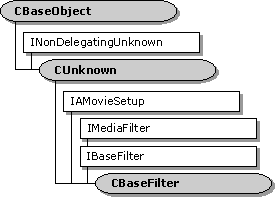

description: The CBaseFilter class is an abstract class for implementing filters. ms.assetid: 4610c8d6-9d7d-47ca-b1d5-0a867153a5f6 title: CBaseFilter class (Amfilter.h) ms.topic: reference ms.date: 4/26/2023 topic_type:
[The feature associated with this page, DirectShow, is a legacy feature. It has been superseded by MediaPlayer, IMFMediaEngine, and Audio/Video Capture in Media Foundation. Those features have been optimized for Windows 10 and Windows 11. Microsoft strongly recommends that new code use MediaPlayer, IMFMediaEngine and Audio/Video Capture in Media Foundation instead of DirectShow, when possible. Microsoft suggests that existing code that uses the legacy APIs be rewritten to use the new APIs if possible.]

The CBaseFilter class is an abstract class for implementing filters. To implement a filter using this class, you must perform at least the following steps:
CBaseFilter.Several base classes derive from CBaseFilter, including CSource, CBaseRenderer, and CTransformFilter. It is usually easier to implement a filter with one of these specialized classes, rather than use CBaseFilter directly.
| Protected Member Variables | Description |
|---|---|
| m_State | Current state of the filter. |
| m_pClock | Pointer to the filter's reference clock. |
| m_tStart | Reference time that corresponds to stream time 0. |
| m_clsid | Class identifier (CLSID) of the filter. |
| m_pLock | Pointer to a critical section that is used to serialize state changes. |
| m_pName | Filter name. |
| m_pGraph | Pointer to the filter graph manager. |
| m_pSink | Pointer to the IMediaEventSink interface on the filter graph manager. |
| m_PinVersion | Current version of the set of pins on this filter. |
| Public Methods | Description |
| CBaseFilter | Constructor method. |
| **~ CBaseFilter** | Destructor method. |
| StreamTime | Retrieves the current stream time. Virtual. |
| IsActive | Determines whether the filter is currently active (running or paused). |
| IsStopped | Determines whether the filter is currently stopped. |
| NotifyEvent | Sends an event notification to the filter graph manager. |
| GetFilterGraph | Retrieves a pointer to the filter graph manager. |
| ReconnectPin | Breaks an existing pin connection and reconnects it to the same pin, using a specified media type. |
| GetPinVersion | Retrieves a version number for the set of pins on this filter. Virtual. |
| IncrementPinVersion | Increments the version number on the set of pins. |
| GetSetupData | Retrieves the registration data for the filter. Virtual. |
| Pure Virtual Methods | Description |
| GetPinCount | Retrieves the number of pins. |
| GetPin | Retrieves a pin. |
| IPersist Methods | Description |
| GetClassID | Retrieves the class identifier. |
| IMediaFilter Methods | Description |
| GetState | Retrieves the filter's state (running, stopped, or paused). |
| SetSyncSource | Sets a reference clock for the filter. |
| GetSyncSource | Retrieves the reference clock that the filter is using. |
| Stop | Stops the filter. |
| Pause | Pauses the filter. |
| Run | Runs the filter. |
| IBaseFilter Methods | Description |
| EnumPins | Enumerates the pins on this filter. |
| FindPin | Retrieves the pin with the specified identifier. |
| QueryFilterInfo | Retrieves information about the filter. |
| JoinFilterGraph | Notifies the filter that it has joined or left a filter graph. |
| QueryVendorInfo | Retrieves a string containing vendor information. |
| IAMovieSetup Methods | Description |
| Register | Adds the filter to the registry. |
| Unregister | Removes the filter from the registry. |
| Requirement | Value |
|---|---|
| Header | Amfilter.h (include Streams.h) |
| Library | Strmbase.lib (retail builds); Strmbasd.lib (debug builds) |